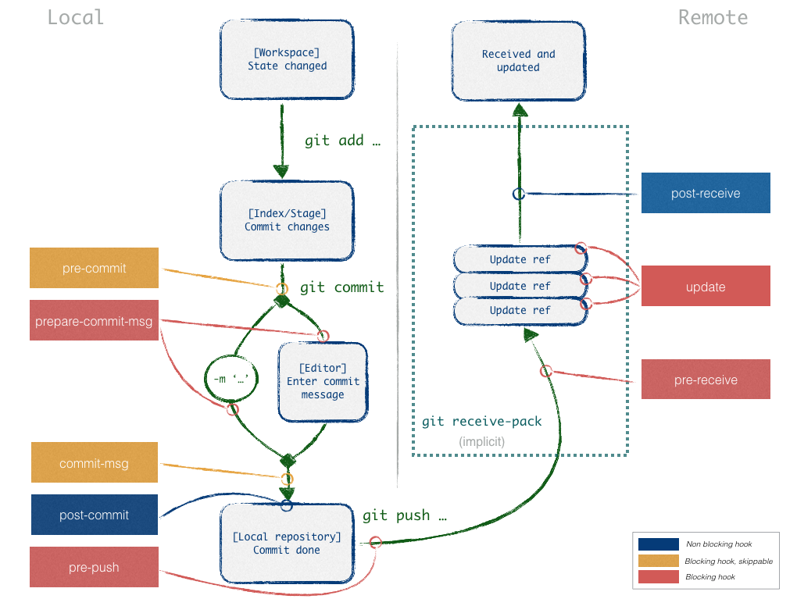

Git - Hook¶
Def¶
Default:
<project>/.git/hooksmust be executable
chmod +x .git/hooks/<hook_file>local hook is not control, just asist
can blocked action or not (by convention pre-<command> blocked)
- standart exit
0: ok, don t block
>= 1: fail, block
Install local¶
Make post-commit hook thanks to template¶
Warning
Not succeed to work :’()
git config --global init.templatedir '~/.git-templates': configure git to follow templatemkdir -p ~/.git-templates/hooks && vi ~/.git-templates/hooks/post-commit: prepare files templates–> add content of post-commit <–
chmod a+x ~/.git-templates/hooks/post-commitgit init: re-initialize repos
Make post-commit hook thanks to global directory¶
git config --global core.hooksPath '~/.gitconfig/hooks': configure git to follow core hookpathmkdir ~/.gitconfig/hooks && code:`vi ~/.gitconfig/hooks/pre-commit: make needed files–> add content of pre-commit <–
chmod +x ~/.gitconfig/hooks/pre-commit:
Make local project hook¶
Warning
If project core.hooksPath is configure in repository, global core.hooksPath will be ignore
git config core.hooksPath './hooks': configure git to follow core hookpath, during init project you need to tell everyone to make this commandmkdir ./hooks && vi ./hooks/pre-commit: make needed files–> add content of pre-commit <–
chmod +x ./hooks/pre-commit: be sure it have good rights
Install Server¶
Pick a project that needs a custom Git hook.
On the GitLab server, navigate to the project’s repository directory. For an installation from source the path is usually /home/git/repositories/<group>/<project>.git. For Omnibus installs the path is usually /var/opt/gitlab/git-data/repositories/<group>/<project>.git.
Create a new directory in this location called custom_hooks.
Inside the new custom_hooks directory, create a file with a name matching the hook type. For a pre-receive hook the file name should be pre-receive with no extension.
Make the hook file executable and make sure it’s owned by git.
Write the code to make the Git hook function as expected. Hooks can be in any language. Ensure the ‘shebang’ at the top properly reflects the language type. For example, if the script is in Ruby the shebang will probably be #!/usr/bin/env ruby.
Hook list¶
commit:
pre-commit
prepare-commit-msg (server)(blocking)
commit-msg
post-commit
patch (git am):
applypatch-msg
pre-applypatch (server)(blocking)
post-applypatch
other:
post-checkout
post-merge
post-rewrite: called by
git commit --amend, git rebasepre-rebase (server)(blocking)
pre-push (server)(blocking)
pre-auto-gc (server)(blocking)
server:
pre-receive (server)(blocking)
update (server)(blocking)
post-update
post-receive
Example¶
Post-commit example¶
#!/bin/sh
# file: ~/.git-templates/hooks/post-commit
# desc: just show the commit you made
# install:
### configure git to follow template
## git config --global init.templatedir '~/.git-templates'
##
### make needed files
## mkdir -p ~/.git-templates/hooks
## vi ~/.git-templates/hooks/post-commit
##
### --> add content of post-commit <--
##
### be sure it have good rights
## chmod a+x ~/.git-templates/hooks/post-commit
##
### re init your repo
## git init
#
#
# Copy last commit hash to clipboard on commit
echo "----------------------------------"
echo "template hook"
echo "----------------------------------"
git log -1 --format=format:%h | pbcopy
# Add other post-commit hook
Pre-commit example¶
#! /bin/bash
# file: /home/user/hooks/pre-commit
# desc: Hook to check if there is !nocommit in the code
# install:
### configure git to follow core hookpath
## git config --global core.hooksPath '~/.gitconfig/hooks'
##
### make needed files
## mkdir ~/.gitconfig/hooks
## vi ~/.gitconfig/hooks/pre-commit
##
## --> add content of pre-commit <--
##
### be sure it have good rights
## chmod +x ~/.gitconfig/hooks/pre-commit
#
# To prevent debug code from being accidentally committed, simply add a comment near your
# debug code containing the keyword !nocommit and this script will abort the commit.
#
echo "-------------------------------------------"
echo "Commit or not commit that is the question"
echo "-------------------------------------------"
if git commit -v --dry-run | grep '<remove_this>!nocommit' >/dev/null 2>&1
then
echo "Trying to commit non-committable code."
echo "Remove the !nocommit string and try again."
exit 1
else
exit 0
fi
#! /bin/bash
#
#
# Un script bloquant tout commit tant que
# des marqueurs de conflits persistent,
# des chaînes de caractères TODO ou FIXME sont detectée.
#
#
#
# Si vous rencontrez une erreur du type `declare: -A: invalid option`
# c’est qu’il vous faut mettre à jour votre version bash à v4.
# Pour Mac OS, regardez ici : http://clubmate.fi/upgrade-to-bash-4-in-mac-os-x/
# Hash utilisant la clé comme expression de recherche (Regex) et la valeur
# associée comme message d’erreur
declare -A PATTERNS;
PATTERNS['^[<>|=]{4,}']="Vous avez des marqueurs de conflits qui traînent";
PATTERNS['TODO|FIXME']="Vous avez des tâches non terminées (FIXME/TODO)";
# Déclare un tableau d’erreurs vide
declare -a errors;
# Boucle sur les noms de fichiers présents dans le `stage`/`index` et
# vérifie que leur contenu contient les chaînes listées dans PATTERNS.
# Filtre uniquement sur les fichiers ajoutés (A), copiés (C), modifiés (M).
for file in $(git diff --staged --name-only --diff-filter=ACM); do
for elem in ${!PATTERNS[*]} ; do
{ git show :0:"$file" | grep -Eq ${elem}; } || continue;
errors+=("${PATTERNS[${elem}]} in ${file}…");
done
done
# Affiche les erreurs dans la console.
# Utilise la synthèse vocale si disponible pour énoncer les messages.
author=$(git config --get user.name)
for error in "${errors[@]}"; do
echo -e "\[\033[1;31m\]${error}\[\033[0m\]"
# Seulement sur Mac OS : synthèse vocale
which -s say && say -v Samantha -r 250 "$author $error"
done
# S’il existe au moins une erreur, arrête la création du commit
if [ ${#errors[@]} -ne 0 ]; then
exit 1
fi
Todo¶
Sources¶
Document history¶
Date |
Version |
Comment |
|---|---|---|
2019.08.04 |
V1.0 |
First write |